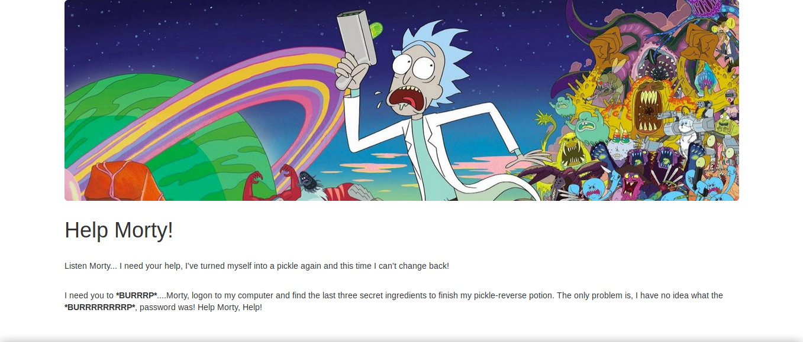
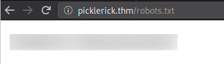
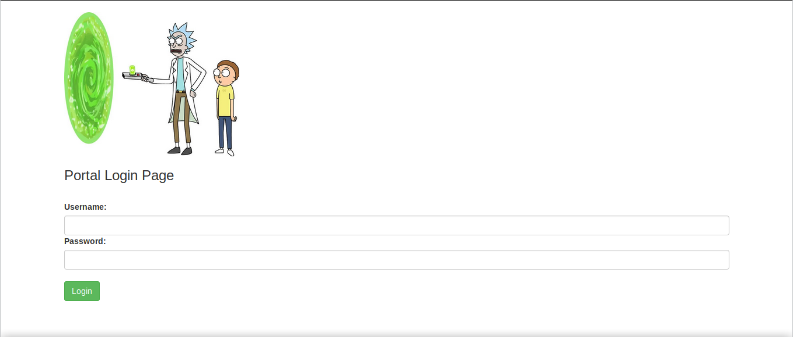
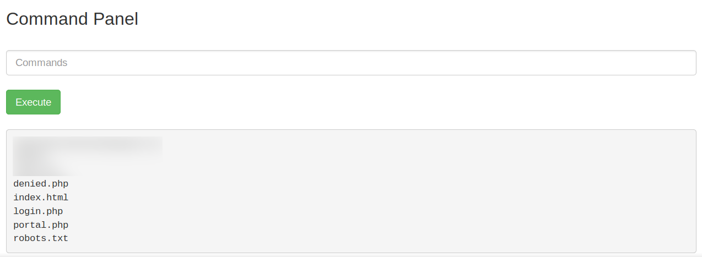
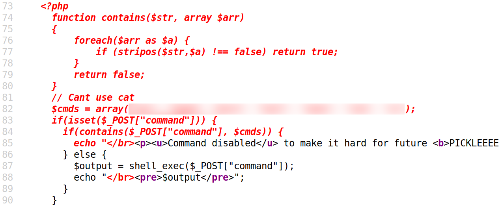
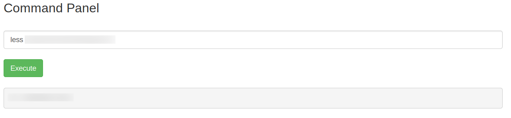
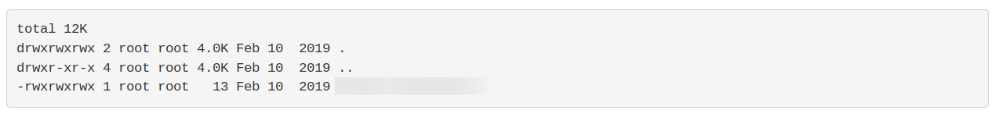
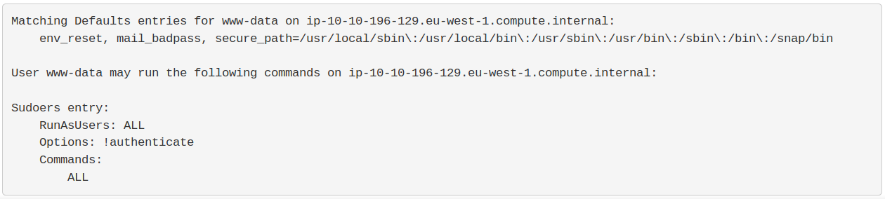
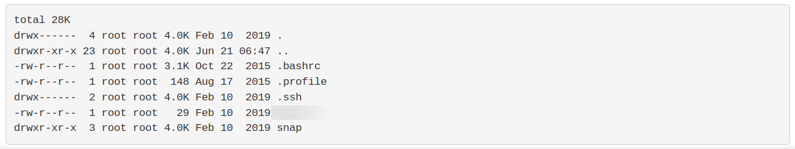

TryHackMe - Pickle Rick

Contenido
| Titulo | Pickle Rick |
|---|---|
| Room | Pickle Rick |
| Info | A Rick and Morty CTF. Help turn Rick back into a human! |
| Puntos | 90 |
| Dificultad | Facil |
| Maker | tryhackme |
NMAP
Escaneo de puertos tcp, nmap nos muestra el puerto http (80), y el puerto ssh (22) abiertos.
# Nmap 7.80 scan initiated Sun Jun 21 01:49:13 2020 as: nmap -sV -o nmap_scan_mini picklerick.thm
Nmap scan report for picklerick.thm (10.10.196.129)
Host is up (0.19s latency).
Not shown: 998 closed ports
PORT STATE SERVICE VERSION
22/tcp open ssh OpenSSH 7.2p2 Ubuntu 4ubuntu2.6 (Ubuntu Linux; protocol 2.0)
80/tcp open http Apache httpd 2.4.18 ((Ubuntu))
Service Info: OS: Linux; CPE: cpe:/o:linux:linux_kernel
Service detection performed. Please report any incorrect results at https://nmap.org/submit/ .
# Nmap done at Sun Jun 21 01:49:46 2020 -- 1 IP address (1 host up) scanned in 32.90 seconds
# Nmap 7.80 scan initiated Sun Jun 21 01:49:14 2020 as: nmap -T4 -sV -sC -p- -o nmap_scan picklerick.thm
Nmap scan report for picklerick.thm (10.10.196.129)
Host is up (0.17s latency).
Not shown: 65533 closed ports
PORT STATE SERVICE VERSION
22/tcp open ssh OpenSSH 7.2p2 Ubuntu 4ubuntu2.6 (Ubuntu Linux; protocol 2.0)
| ssh-hostkey:
| 2048 84:2d:fc:6a:81:e4:da:21:a5:b8:8f:0f:3c:8d:74:1a (RSA)
| 256 e5:aa:df:44:6c:ad:56:d0:91:d0:43:c8:a8:30:4c:2d (ECDSA)
|_ 256 b9:24:ea:f6:3b:3c:ba:14:58:bb:e8:7b:6c:2c:1b:53 (ED25519)
80/tcp open http Apache httpd 2.4.18 ((Ubuntu))
|_http-server-header: Apache/2.4.18 (Ubuntu)
|_http-title: Rick is sup4r cool
Service Info: OS: Linux; CPE: cpe:/o:linux:linux_kernel
Service detection performed. Please report any incorrect results at https://nmap.org/submit/ .
# Nmap done at Sun Jun 21 02:05:52 2020 -- 1 IP address (1 host up) scanned in 997.58 seconds
HTTP
Encontramos una pagina web en el puerto 80. 
GOBUSTER
Utilizamos gobuster para busqueda de directorios y archivos.
root@upset:~/thm/picklerick# gobuster dir -u http://picklerick.thm/ -w /usr/share/wordlists/dirb/common.txt -q -t 15 -x php,html,txt
/assets (Status: 301)
/denied.php (Status: 302)
/index.html (Status: 200)
/login.php (Status: 200)
/portal.php (Status: 302)
/robots.txt (Status: 200)
/server-status (Status: 403)
En el codigo fuente de la pagina principal encontramos un comentario que indica un nombre de usuario.

En el archivo robots.txt encontramos una frase.

En la pagina login.php encontramos un panel de inicio de sesion.

Utilizamos el usuario que encontramos con la frase en robots.txt y logramos obtener acceso al portal de la pagina.

Ingredientes
En el portal encontramos un input en el que podemos ejecutar comandos. 
Listamos los comandos pero no podemos utilizar cat al parecer esta bloqueado, pero podemos utilizar less para leer los archivos por lo que podemos leer los archivos del sistema y de la pagina, y vemos los comandos que no estan permitidos.

Primer Ingrediente
Encontramos el Primer Ingrediente en el directorio actual. 
Segundo Ingrediente
El Segundo Ingrediente lo encontramos en el directorio principal de rick, pero el dueño del archivo es el usuario root. 
Hacemos una pequeña enumeracion con sudo -l -l y vemos que tenemos permisos root (sudo) para ejecutar cualquier comando sin contraseña.

Con sudo less podemos leer el Segundo Ingrediente.

Tercer Ingrediente
En el directorio principal del usuario root encontramos el Tercer Ingrediente. 
Tercer Ingrediente.